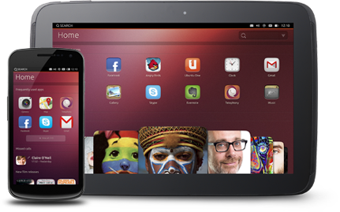

Ubuntu Touch
Jan Stalhut
4. März 2013
Übersicht
- Einführung
- Aktueller Stand
- App-Entwicklung
- Demo
Einführung
Ubuntu Touch?
- Ubuntu-Oberfläche für Smartphones und Tablets
- Anlehnung an den Unity Desktop
- Bei angeschlossenem Bildschirm als PC nutzbar
Geschichte
- Bekanntgabe eines Smartphone OS:
2. Januar 2013
- Bekanntgabe eines Tablet OS:
19. Februar 2013
- Veröffentlichung der Preview:
21. Februar 2013
- Tägliche Updates (Daily Builds) seit
27. Februar 2013
- Erste mobile Geräte mit Ubuntu
Frühjahr 2014
Aktueller Stand
Unterstützte Geräte
- Aktuelle Nexus-Geräte:
- Galaxy Nexus
- Nexus 4
- Nexus 7
- Nexus 10
- Zahlreiche weitere Portierungen:
Funktionale Anwendungen
- Telefon (inkl. SMS und Adressbuch)
- Kammera
- Web-Browser
- Galerie
- Notizen
- Media-Player
Einschränkungen
- Internet nur via WLAN
- Kein Flugzeugmodus etc.
- Kein Unterstützung von Bluetooth
- SIM mit PIN-Sperre werden nicht unterstützt
- Kein Zugriff auf SIM-Speicher
- keine Einstellungen für manuelle IP, versteckte SSID, VPN, etc.
App-Entwicklung
Entwicklung
- Wahlweise HTML 5 oder native
- IDE QT Creator
Ubuntu SDK Alpha
- Debugging über USB (ADB)
- WLAN-Verbindung für SSH-Key-Pairing
- Neuer Reiter Devices im QT Creator
Nutzung der ADB
- logcat
- pull/push
- shell
- ...
Ubuntu-Konsole
Demo

© Jan Stalhut